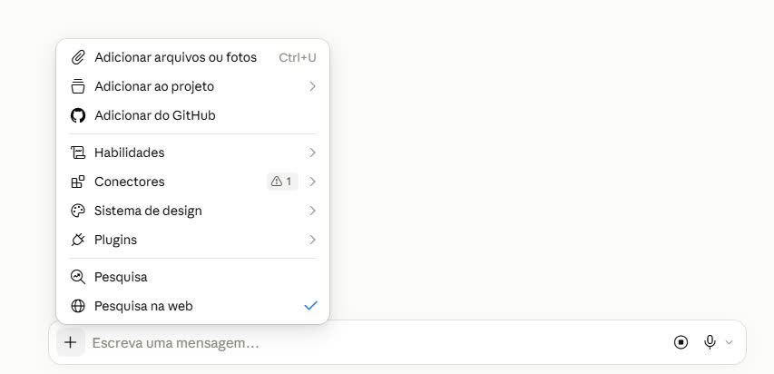
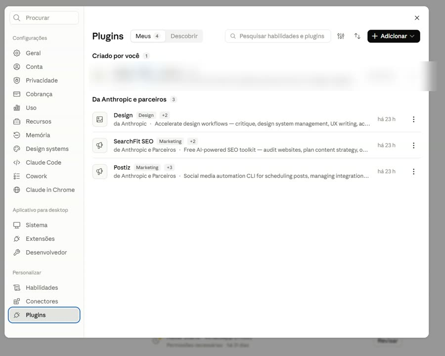
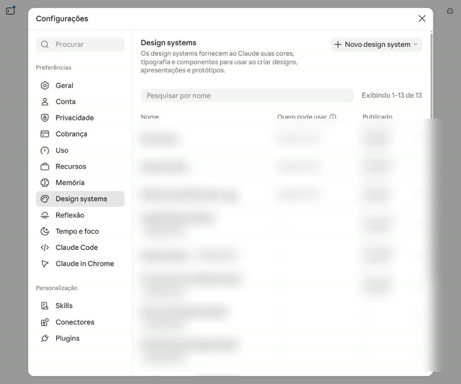
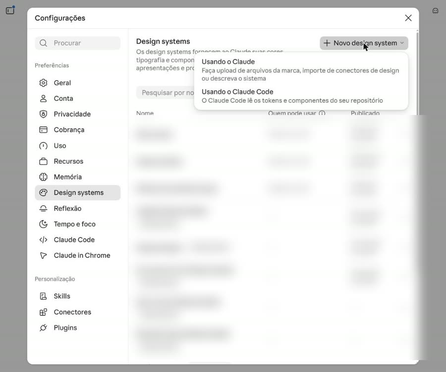
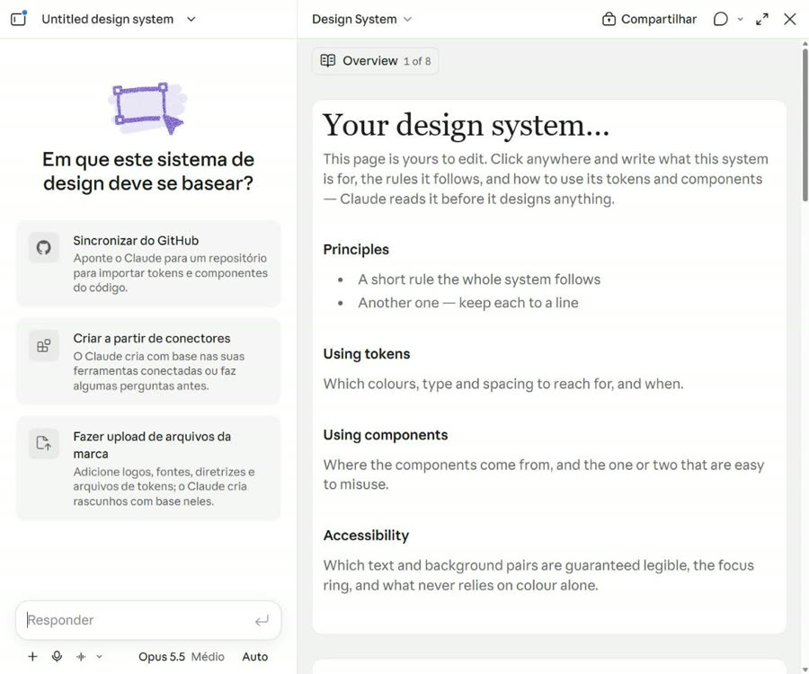
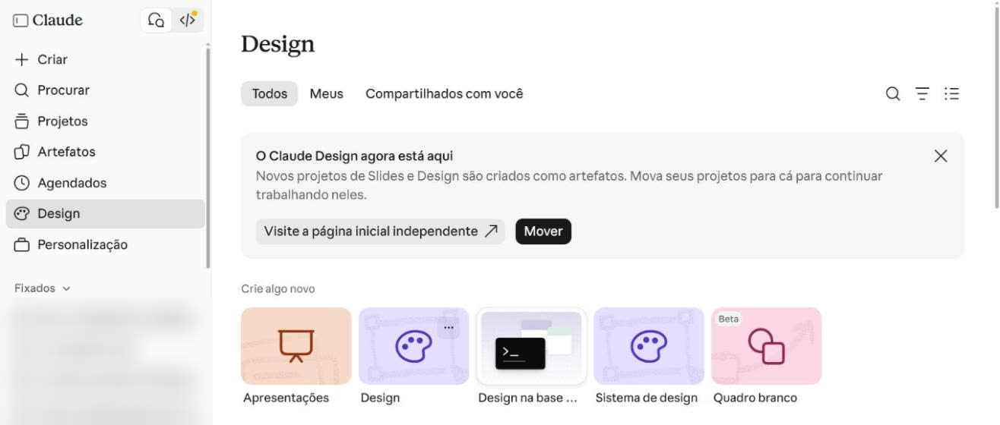
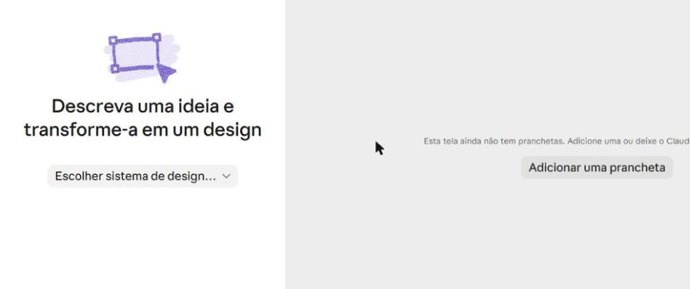
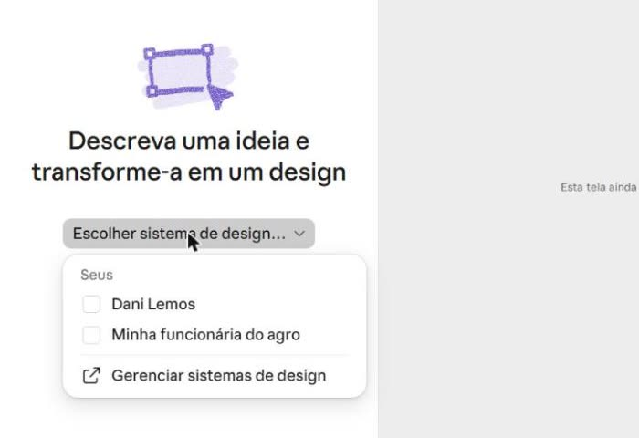
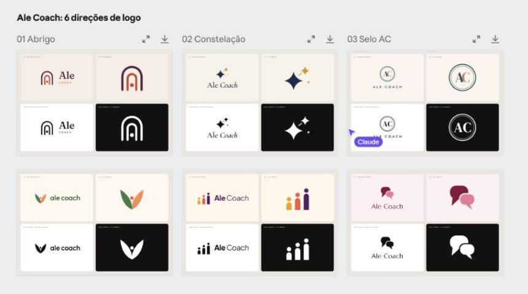
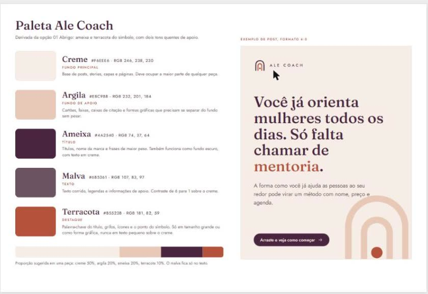

Seja bem-vinda, você
Aqui fica tudo o que nós fizermos juntas: a gravação de cada encontro, o passo a passo da semana e o guia para consultar quando bater uma dúvida.
Semana 1 · O seu cérebro no Claude
Ele aprende quem você é, ganha o seu design system e vira um plugin que pensa como você.
o caminho das 4 semanas
o que você tem aqui dentro
As minhas 4 semanas
Clique na semana e ela abre com tudo dentro: a gravação do nosso encontro, os passos, os pedidos para copiar e os materiais daquela semana.
bônus, no seu tempo
depois da nossa aula
Semana 1 · O seu cérebro no Claude
Nove passos curtos. Abra um por vez: dentro de cada um está o que fazer, onde clicar e o pedido pronto para copiar.
os passos desta semana
Projeto é uma pasta de conversa. Tudo o que você contar lá dentro ele lembra nas próximas vezes, e o que você conversar fora dele não atrapalha. Todo o nosso trabalho mora dentro de um projeto só.
onde você fazNo aplicativo do Claude, no computador, na coluna da esquerda, em Projetos. Se você ainda não instalou o aplicativo, dá para fazer pelo navegador, em claude.ai/projects.
- Clique em Projetos e depois em Novo projeto.
- Dê o nome Meu funcionário.
- Entrou no projeto? Então tudo o que vem a seguir é dentro dele.
O cérebro é uma pasta com seis arquivos: quem sou, serviços, público, voz, regras e processos. Eles entram em branco e o Claude preenche com você no passo seguinte.
o que você precisa ter em mãos
- Baixe a pasta do cérebro, nos materiais desta semana.
- Descompacte e procure a pasta modelos: são os seis arquivos.
- No projeto, clique no + e depois em Adicionar ao projeto.
- Escolha os seis arquivos de uma vez.
Você não preenche os arquivos na mão. Ele te faz dez perguntas, uma de cada vez, e escreve tudo com as suas palavras. Responda do seu jeito, com detalhe, como se fosse um áudio para uma amiga.
Quero que você me conheça para trabalhar do meu jeito. Use os arquivos do cérebro que estão neste projeto e monte o meu cérebro: 1. Me faça 10 perguntas, uma de cada vez, e espere a minha resposta antes da próxima. 2. Pergunte quem eu sou, o que eu faço, para quem, como eu falo e o que eu nunca faço. 3. Me peça 3 mensagens reais que eu já mandei para clientes, para aprender o meu tom. 4. Escreva com as minhas palavras, sem inventar e sem palavra de marketing que eu não usei. Onde faltar informação, pergunte. 5. No final, salve tudo na pasta cerebro deste projeto e me mostre um resumo de cada arquivo para eu corrigir. E vale para sempre, a partir de agora: toda vez que eu te corrigir alguma coisa, anote a correção como regra no meu regras.md, com as minhas palavras, e me avise que anotou. Eu não quero repetir a mesma correção duas vezes.
Artefato é uma tela que o Claude constrói dentro da conversa: uma página com abas, botões e listas, que você clica e navega. Serve para você ver o resultado em vez de ler um texto comprido. Ele aparece do lado direito da conversa, e você pode voltar nele quando quiser.
Crie um artefato visual para eu navegar pelo meu cérebro no dia a dia. Eu quero ver, e não ler um texto comprido. Então monte uma tela só, bonita e simples, com: 1. No topo, um resumo escrito de três linhas: quem eu sou para você. 2. Uma aba ou um cartão para cada arquivo (quem sou, serviços, público, voz, regras e processos), com ícone em cada um, para eu bater o olho e saber onde clicar. 3. Dentro de cada um, o conteúdo em tópicos curtos, com destaque no que mais importa. 4. Marcado em cor diferente, o que ainda está vazio ou raso, para eu saber o que falta contar. 5. Um lugar com os pedidos que eu mais vou usar no meu dia, prontos para copiar. Use ícones, cores e espaço: tem que ser agradável de abrir todo dia.
Enquanto o cérebro está só no projeto, ele vale ali dentro. Virando plugin, ele fica instalado na sua conta e vale em toda conversa, inclusive nas tarefas que rodam sozinhas.
Agora transforme a minha pasta cerebro em um plugin, para eu instalar na minha conta. Monte a estrutura certa do plugin, com a skill que manda você ler o meu cérebro antes de qualquer tarefa minha, e me entregue o arquivo pronto para enviar. Depois me diga, em passos numerados, onde eu clico para instalar.
- Ele vai te dar um arquivo para baixar, com final .zip. Clique em baixar: ele cai na sua pasta de Downloads.
- Não abra e não descompacte esse arquivo.
- No aplicativo do Claude, abra Cowork e depois Plugins, no menu da esquerda.
- Clique no botão de adicionar, no canto de cima, e escolha Enviar plugin.
- Procure o arquivo na pasta Downloads e confirme.
- Pronto: ele aparece na lista, como na tela abaixo. A partir daqui, toda conversa sua já sabe quem você é.

O design system é o jeito da sua marca escrito num lugar que o Claude lê antes de criar qualquer arte: as suas cores, as suas fontes, a sua logo e o que você não quer ver nunca. Ele fica guardado na sua conta e vale para todas as suas conversas.
o que você precisa ter em mãos, antes de começarNão tem tudo isso? Comece com o que tiver. Ele pergunta o resto.
onde você faz, clique por clique- No aplicativo do Claude, abra as Configurações e clique em Design systems, no menu da esquerda.
- Clique no botão + Novo design system, no canto de cima, à direita.

- Abre um menu com duas opções. Escolha a primeira, Usando o Claude. A segunda é para quem já tem código pronto, e não é o seu caso.

- Ele pergunta em que este sistema de design deve se basear. Escolha Fazer upload de arquivos da marca, a terceira.
- Suba a sua logo, as suas fontes e as suas artes de exemplo.
- Ele abre uma conversa e começa a montar. É nessa conversa que você cola o pedido abaixo.

Eu acabei de subir a minha logo, as minhas fontes e algumas artes que eu considero a minha cara. Olhe esse material e me pergunte, uma coisa por vez: o código das minhas cores e onde eu uso cada uma, qual fonte é de título e qual é de texto, o que eu uso de foto, e o que eu não quero ver nunca numa arte minha. Depois escreva o meu design system com uma regra por linha, em português simples, e me mostre antes de guardar. Onde você não tiver certeza, pergunte em vez de inventar. No fim, me dê também uma versão resumida em um parágrafo, para eu colar em qualquer lugar que pergunte o estilo da minha marca.
Ele fica guardado na sua conta, nessa mesma lista de Design systems. Para usar numa conversa, clique no + ao lado de "Escreva uma mensagem" e escolha Sistema de design. A partir daí, toda arte, página ou apresentação que ele criar já sai no seu estilo.
Pegue as regras do meu design system e acrescente ao plugin do meu cérebro, para elas valerem em toda conversa minha, inclusive nas tarefas que rodam sozinhas. Me entregue o plugin atualizado para eu enviar de novo, e me diga em uma frase o que mudou.
O Claude Design mudou de lugar: agora ele vive dentro do próprio Claude, no menu da esquerda, em Design. Se você procurar o site antigo, vai achar um aviso dizendo que tudo passou para cá.

- No menu da esquerda, clique em Design.
- Em Crie algo novo, clique no segundo quadrinho, também chamado Design.
- Abre uma tela em branco com a frase Descreva uma ideia e transforme-a em um design. É aí que você escreve.
- Cole o pedido abaixo, trocando o que está entre colchetes pelas suas informações, e envie.
- Ele leva uns dois a três minutos desenhando. Dá para sair da tela e voltar depois.

O botão Escolher sistema de design, no meio da tela, só interessa depois que você tiver feito o passo 6. Na primeira vez, deixe como está: a graça aqui é justamente ver as opções antes de ter um estilo fechado.

Crie 6 opções de logo para a minha marca. Nome da marca: [o nome] O que eu faço: [em uma frase] Para quem: [quem é a sua cliente] A marca precisa transmitir: [três palavras] Faça cada opção em quatro versões: em cor, em preto e branco, com o nome por extenso e só com o símbolo. Me diga em uma linha a ideia por trás de cada opção.

Não precisa começar de novo. Escreva na mesma conversa, com as suas palavras: gostei da 1, mas deixa o símbolo mais simples e troca o verde por um tom de areia. Ele refaz só aquela.
a paleta de coresDepois de escolher a logo, peça a paleta na mesma conversa. Assim as cores nascem da sua logo, e não de um gosto solto.
Agora monte a paleta de cores da minha marca a partir da opção [número da logo que eu escolhi]. Quero uma prancheta nova com 5 cores, o código de cada uma, onde eu uso cada cor (fundo, título, texto, destaque) e um exemplo de post aplicando a paleta.

Baixe a logo escolhida e guarde o código das cores. É esse material que entra no passo 6, quando você monta o seu design system: a partir dali, toda arte que ele criar já sai com a sua cara.
É o cabo que liga o Claude nos seus apps: agenda, e-mail, Drive. Sem ele, o Claude só sabe o que você escreve. Com ele, o Claude enxerga o que já existe na sua conta.
onde você fazEm claude.ai/settings/connectors, ou no mesmo + da conversa, em Conectores. Você clica em conectar, entra com a sua conta e pronto.
Olhe a minha agenda e me diga, em uma frase, o que eu tenho marcado para amanhã. Não marque, não apague e não mude nada: eu só quero saber se você está enxergando a minha agenda.
Agora ele sabe quem você é, como você fala e o que você vende. Este último pedido faz ele te mostrar onde pode entrar no seu trabalho, com exemplos do seu negócio e não de um negócio qualquer.
Com base no meu cérebro, no meu design system e nos conectores que eu liguei, me mostre o que você pode fazer por mim. Separe em três listas: o que você já consegue fazer hoje, o que você conseguiria se eu te ligasse em mais alguma ferramenta, e o que você não faz e eu não devo esperar de você. Em cada item, escreva o pedido pronto que eu colaria para acontecer, com exemplo do meu trabalho, não de um trabalho genérico. No fim, me diga as três coisas que mais me poupariam tempo, na sua opinião, e por quê.
os links desta semana
os materiais desta semana
Guia do Claude do zero
Não faz parte das 4 semanas. Fica aqui para quando bater uma dúvida de base. Clique na aula e você acha o vídeo, os links e os materiais dela.
Ligar na agenda e nos arquivos
Conectores, plugins e skills, sem medo da palavra. Embaixo estão os links de cada conector e o pedido para testar se ficou ligado.
os links desta aula
o pedido para testar
Olhe a minha agenda e me diga, em uma frase, o que eu tenho marcado para amanhã. Não marque, não apague e não mude nada: eu só quero saber se você está enxergando a minha agenda.
Materiais
Clique em cada um para ver o que é, onde você usa e para que serve. O botão de baixar está lá dentro.
Glossário
As palavras que aparecem no caminho, explicadas do jeito que eu explicaria para alguém que nunca abriu o Claude. Nenhuma delas é difícil de verdade.
Dúvidas
Se a sua não estiver aqui, me mande no WhatsApp que ela entra nesta lista.
Preciso pagar o Claude?
Para experimentar, o plano de entrada serve. Para o que nós vamos fazer, o plano Pro é o que vale a pena. Nós olhamos isso juntas no primeiro encontro, antes de você assinar qualquer coisa.
Prompt, projeto, skill, conector. Eu preciso saber essas palavras?
Não. Pedido é o que você escreve para ele. Projeto é a pasta onde ele lembra de você. Skill é um pacote de habilidade que alguém já montou. Conector é o que liga ele na sua agenda, no seu e-mail e nas suas redes. Pronto, acabou o vocabulário.
Ele vai escrever igual a mim?
No começo, não. Ele escreve parecido e você corrige dizendo o motivo. Depois que o seu cérebro e o seu design system estão montados, a diferença fica pequena.
Perdi a minha senha.
Me chame no WhatsApp e eu te mando outra na hora. Ninguém mais tem acesso à sua área.
o nosso combinado